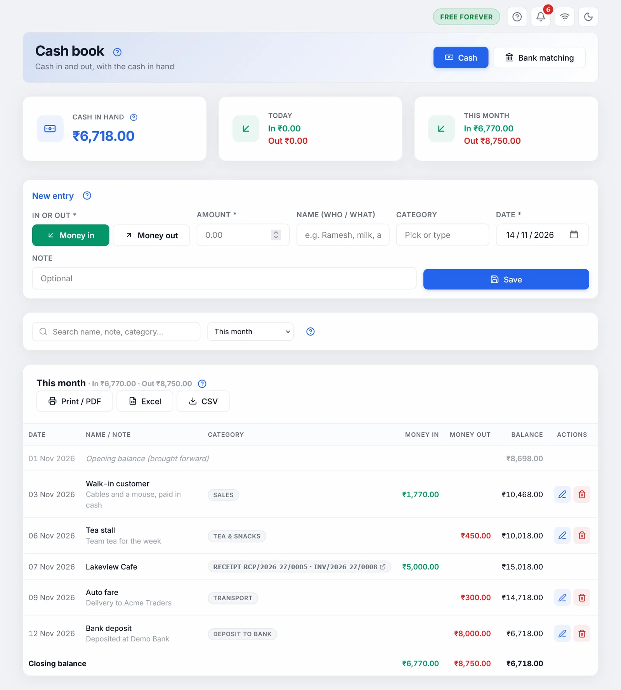

Cash book
Every rupee that comes in or goes out in cash, with names and notes, and how much cash you should have in the drawer right now.
#What the cash book is for
Use it for cash that does not belong on an invoice or a bill: money taken at the counter, an advance from a customer, salary paid in cash, tea and snacks, auto fare, money you take home, or cash you deposit in the bank. Each entry is either Money in or Money out, with an amount, a date, a name (who or what) and a note if you like.
Open it from Cash book in the sidebar. If you do not see it, tick Cash book under Menu in Settings, Features and save. It is on to start, whatever your business type.
Each business has its own cash book, like its expenses and receipts. Switching the business at the top of the sidebar shows that business's cash.
The screen has, from top to bottom: the cash in hand cards, the entry form, the dates and search bar, and the list with its Print / PDF, Excel and CSV buttons.

#Start with the cash you have today
Count the cash in your drawer (or cash box) on the day you start, then add it as your first entry:
- Money inMake sure Money in is selected (it turns green).
- AmountType the cash you counted, such as 12500.
- CategoryClick the Category box and pick Opening balance.
- SavePress Enter or click Save.
From then on, Cash in hand is this amount plus everything that comes in, less everything that goes out. While the cash book is empty, the list reminds you: "No cash entries yet. Add your cash in hand today as Money in, category Opening balance, to start."
#Adding an entry
The New entry form is at the top of the screen, so you can add one entry after another without opening anything.
- In or outClick Money in (green) for cash you received, or Money out (red) for cash you paid.
- AmountRequired. More than 0, in rupees and paise.
- NameWho paid you or whom you paid, or what it was for: "Ramesh", "Milk", "Auto". Your clients' names, and names you used before, appear as you type.
- CategoryOptional. Pick one of Opening balance, Sales, Advance, Salary, Tea & snacks, Transport, Owner drawing, Deposit to bank or Other, or type your own.
- DateToday to start. Change it for an entry you forgot yesterday.
- NoteOptional, anything you want to remember.
- SavePress Enter in any box, or click Save.
| Field | Details |
|---|---|
| In or out * | Money in or Money out. The one chosen is coloured. |
| Amount * | More than 0. Paise allowed (12.50). |
| Name (who / what) | Up to 120 letters. Suggestions come from your clients and names used before in this cash book. |
| Category | Pick from the list or type your own, up to 60 letters. Your own word is kept as you typed it. |
| Date * | The day the cash moved. |
| Note | Up to 500 letters. |
The suggestion list. Clicking the Name or Category box, or typing in it, opens a white list under it with the choices that match what you typed. Click one, or use the ↑ and ↓ keys and Enter. Esc closes the list, and Tab moves on to the next box. You can always type your own word instead.
After saving you see, for example, "Money in of ₹500.00 saved." The entry appears in the list, and the amount, name, category and note are cleared for the next one, with the cursor back in Amount. Money in or out and the date stay as they were, so ten counter sales in a row are quick. If the date you gave is outside the dates the list shows, the message says so ("It is dated 05 Oct 2026, outside This month: choose All dates to see it.").
If something is missing you see a message saying what to fix, and nothing is saved: "Enter an amount more than 0", "Enter a date", "Choose Money in or Money out", or "The name is too long (120 letters at most)". "Could not save the entry. Try again.": the app could not reach its data; see Saving and working in the app. The entry saved but you do not see it: it may be outside the dates chosen below the form; pick All dates.
#Cash already recorded in the app
You do not type cash in twice. These show in the cash book on their own, with a small dashed label saying where they came from:
| Label | Where it was made | Shows when |
|---|---|---|
| Invoice INV-5 payment | A payment recorded on the Dashboard | The payment mode is Cash (money in) |
| Invoice CN-2 payment | A refund recorded on a credit note | The payment mode is Cash (money out) |
| Receipt RCP/26-27/0012 | A payment receipt; the invoice number follows if it was against one | The payment mode is Cash (money in) |
| Expense | An expense; its category shows too | The payment mode is Cash (money out) |
| Purchase bill GS/0457 payment | A payment to a supplier recorded on a purchase bill, with the supplier's name and the reference | The payment mode is Cash (money out) |
These lines cannot be edited or deleted in the cash book (they have no pencil or bin). Click the label to go to the screen it was made on, and change it there; the cash book follows.
Counted once. Recording a payment on the Dashboard also makes a receipt, and a receipt against an invoice also records a payment on it. It is the same money, so the cash book shows it once, as the receipt.
Paying suppliers. Record a cash payment to a supplier on the purchase bill (green ₹ button in Purchases), not here: it then shows here once, and the bill's balance goes down too. A bill marked Paid from the Status dropdown is not counted as cash (how it was paid is not known). If you added supplier payments here by hand before, and now record them on the bill as well, delete your own entry. See Cash payments and the Cash book.
Invoices and receipts in another currency (export invoices in dollars, for example) are left out: the cash book is in rupees.
#Cash in hand and the totals
The cards at the top show:
- Cash in hand: all money in, less all money out, up to today. Entries dated in the future are not counted until their day comes. It turns red if it goes below zero, which usually means an entry is missing or the opening balance was not added.
- Today: cash in and out today.
- This month: cash in and out since the 1st.
These cards always count every line, whatever dates or search you choose for the list.
Count the drawer at the end of the day and compare it with Cash in hand. If they differ, look for an entry you forgot.
Cash in hand is red or too low: add your opening balance, and check that cash sales recorded on invoices or receipts used mode Cash. It is too high: a cash payment may be entered here and also on a receipt; delete your own entry, since the receipt already counts.
#The list and the running balance
The list's title is the dates you chose (such as This month) with the money in and out of the lines shown. The list is oldest first, like a paper cash book; on the same day, lines go in the order entered, money in before money out. Each line shows the date, name and note, category (or where it came from), the amount under Money in or Money out, and the Balance: the cash you had after that line. A line with no name shows "Money in" or "Money out".
The first line, Opening balance (brought forward), is the cash you had when the chosen dates begin. With All dates there is no such line. The last line, Closing balance, is the cash at the end of them, with the total in and out. When nothing falls in the dates, you see "Nothing in these dates."
#Changing or deleting an entry (Edit entry)
Your own entries have a pencil and a bin under Actions. The pencil opens the entry in a small Edit entry window, with the same boxes as the New entry form (on a phone it comes up from the bottom of the screen). Change it and click Save or press Enter. Cancel, the X, Esc or a click outside the window leave it as it was. The New entry form at the top is not touched, so you can go back to adding straight away.
Delete at the bottom left of the window deletes the entry, after the same question as the bin below.
The bin deletes the entry. The app asks first, saying how cash in hand will change ("Money out of ₹200.00 on 05 Oct 2026 (Auto) is removed from the cash book..."). Click Delete. This cannot be undone.
Lines from invoices, receipts and expenses have no pencil or bin. Change them where they were made (see above).
#Choosing dates and searching
The bar between the form and the list chooses which lines the list shows.
| Choice | Shows |
|---|---|
| This month | The 1st to the last day of this month. The choice when you open the screen. |
| Last month | The whole of last month. |
| This financial year | 1 April to 31 March of the current year. |
| All dates | Everything, from your first entry. |
| Choose dates | Two date boxes appear: a from date and a to date. Leave one empty for no limit on that side. |
The Search name, note, category... box finds lines by name, note, category, where they came from (such as a receipt or invoice number), or amount. While you search, the totals at the bottom add up only the lines found, and the last line reads Total of these lines; each line still shows its real balance. The red X button (it shows once you search or change the dates) clears the search and goes back to This month.
#Print, PDF and Excel
Print / PDF, Excel and CSV above the list save the lines shown, with the dates and search you chose: the opening balance, each line with its balance, and the total. The columns are Date, Name, Note, Category, From (where the line came from, or "Cash book" for your own entries), Money in, Money out and Balance. To make a PDF, click Print / PDF and choose Save as PDF as the printer. The CSV opens in Excel too.
Your cash book is also saved in your backups. In Export Backup it travels with Expenses.
"Nothing to export": no lines are shown for the dates and search chosen; widen the dates. Print / PDF does nothing: allow pop-ups for the app; see Print does nothing.
#Bank matching
Bank matching checks your bank statement against your books: every payment that came into or went out of the bank should be on an invoice, a purchase bill or an expense. It shows which lines are matched and which are still to match, and records the payments you have not entered yet.
Open Cash book in the sidebar and click Bank matching next to the title at the top (Cash goes back). Each business has its own statements, like its cash book.
#Importing a statement
- Download itIn your net-banking, open the account statement for the dates you want and download it as CSV or Excel (.xlsx). Old Excel files (.xls) cannot be read: open them in Excel and save as .xlsx or CSV.
- BankLeave Find out from the file: SBI, HDFC, ICICI, Axis, Kotak, PNB and Yes Bank are recognised from their columns. Other banks work when the file has a date, a description and either Debit and Credit columns or one Amount column (with a minus for money out, a Dr / Cr column, or written as 500.00 Dr). If the lines come out wrong, choose your bank here and import again.
- ImportClick Import statement (CSV or Excel) and choose the file. You see, for example, "4 lines read (HDFC)".
Each line keeps its date, description, the amount in or out, and the bank's reference (cheque, UTR or reference number) when the bank gives one. Dates may be written 05/11/2026, 05-Nov-2026 or 5 November 2026. Opening balance and total rows are left out. A statement of more than 1,000 lines is kept in parts ("part 1 of 3"), each listed under the statements.
Importing twice is safe. A line already here (same date, amount and reference; when one of the two has no reference, the same description) is skipped, so you can import an overlapping statement, such as the whole month again: "All 4 lines of this statement are already here. Nothing was added."
The cards on top show the Lines imported, how many are Matched (and ignored), how many are still To match with their money in and out, and the total Money in / out. Choose a statement in the bar below the cards to see the numbers for that one statement.
#How lines are matched
For each line still to match, the Match column shows the best suggestion and why it was made, such as "Same amount, 2 days after the unpaid invoice, INV/26-27/0007 is in the description".
| Bank line | Can be |
|---|---|
| Money in | A payment already recorded on an invoice, or an unpaid or partly paid invoice whose balance is that amount |
| Money out | A payment already recorded on a purchase bill, an unpaid purchase bill, or an expense (paid or unpaid) |
- Amount: the same, or within ₹1 (round-off). For an unpaid invoice or bill, its balance or up to ₹1 more: a payment short of the balance is not suggested, since it would leave the invoice Partly paid (pick it by hand if the client really paid less).
- Date: within 7 days of a payment or expense already entered. An unpaid invoice or bill may be paid any time after its date, but not more than 7 days before it.
- Name or number: a suggestion comes first when the client's or supplier's name, or the invoice or bill number, is in the bank's description.
Invoices in another currency, cancelled invoices, quotations and challans are not suggested, nor are partly paid expenses. Payments and expenses paid in Cash are never suggested: cash does not go through the bank. A payment or expense matched to one line is not offered for another.
#Confirm, pick, ignore, undo
The buttons under Actions:
| Button | What it does |
|---|---|
| Green tick (Confirm) | Accepts the suggestion: the line becomes Matched. For an unpaid invoice or purchase bill it also records the payment on it, dated the bank date, mode Bank transfer, with the bank's reference, exactly as Record Payment does: the balance and status change, and an invoice payment gets its receipt. For an unpaid expense it marks the expense paid by bank transfer. |
| Magnifier, or the receipt icon on money out (Pick) | Opens a list under the line: the suggestions, then the other invoices, bills and expenses nearest in amount. Type an invoice number, a name or an amount to find one, and click Use. On money out you can instead type a category (Bank Charges to start) and click Add as expense: an expense paid by bank transfer is added, dated the bank date. |
| Crossed eye (Ignore) | For lines that are not in your books: bank charges you do not track, transfers between your own accounts, a loan. The line is counted as Ignored. |
| Curved arrow (Undo) | Puts the line back to To match. If confirming recorded a payment, the payment (and its receipt) is taken back and the balance goes up again; if it added an expense, the expense is deleted; if it marked an expense paid, the expense is as it was. The app asks first. |
The list shows the lines To match to start; choose All lines, Matched or Ignored in the bar, or search by description, reference or amount. The bin next to a chosen statement removes it from Bank matching (your invoices, bills and expenses are not changed); undo its lines that recorded a payment or added an expense first.
Payments recorded here use mode Bank transfer, so they are not in the cash book, which counts cash only. Your statements and their matches are in your backups: in Export Backup they travel with Expenses.
"No transactions found": the file is not a statement the app can read; download the CSV or Excel statement again, or choose your bank. "Could not read this statement": the file is damaged, or an old .xls. No suggestion for a line you know is there: the amount or date may be off by more than ₹1 or 7 days; use the magnifier to pick it by hand. "Payments of ... are more than ... this bill comes to": the bank amount is more than the purchase bill's balance; pick the right bill. "Could not save the match, so the payment was taken back. Try again.": the app could not save the line, so it undid the payment it had just recorded; nothing is half done. Try again, and if it keeps happening see Saving and working in the app.